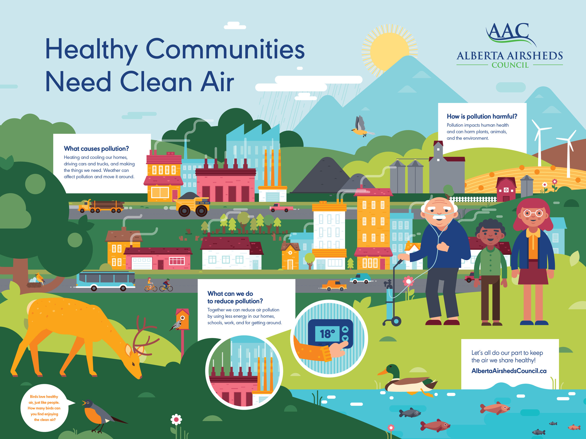
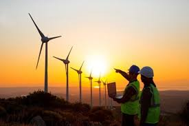

How Emissions Affect Heatwaves & Wildlife
Greenhouse gases trap heat in the atmosphere, causing Brisbane's temperature to rise. This leads to longer and more intense heatwaves. Also, heatwaves dry out water sources and destroy natural habitats. Many animals, like koalas and bats, struggle to survive without shade or water.
How to reduce gas emission
You can help reduce emissions by using public transport, saving electricity, recycling waste, and supporting clean energy. Small actions at home and in your community make a big difference for the planet.

Carbon Footprint Comparison: Cars vs Other Transport Modes
Why Public Transport Helps Reduce Emissions
Cars release a lot of carbon dioxide for every person they carry. Public transport like buses and trains can move many people at once, using less fuel and creating fewer emissions per person. It's a cleaner, smarter way to travel.
Benefits of Decreased Emissions
1. Cleaner Air Saves Lives

Decreased emissions lead to better air quality, preventing up to 7 million premature deaths annually caused by air pollution (WHO, 2021).
2. Healthier Climate

Lower greenhouse gas emissions slow global warming, reducing the risk of heatwaves, droughts, and severe weather.
3. Improved Public Health

Fewer pollutants like nitrogen dioxide (NO₂) and PM2.5 reduce asthma, lung disease, and heart problems, especially in children and the elderly.
4. Economic Savings
Clean air and energy efficiency can save governments and individuals billions in healthcare and energy costs every year.
5. Boosts Renewable Energy & Jobs

Shifting from fossil fuels to clean energy supports the growth of millions of green jobs globally (IRENA, 2023).
6. Protects Nature and Wildlife
Lower emissions mean less acid rain, ocean warming, and habitat destruction helping preserve forests, coral reefs, and biodiversity.